二、 對於企業界工作時影響部份以下提出相關指令功能來討論，並提出建議供原廠參考。輔助說明圖片以2009及2008二個版本來作比較。
由於2009版本模型空間顏色改為米黃色，這樣造成開啟圖檔時圖面物件顏色會看不清楚，雖然說可以再將2009預設顏色改回黑色，但是有一些新的使用者可能不會改而造成使用上的困擾。

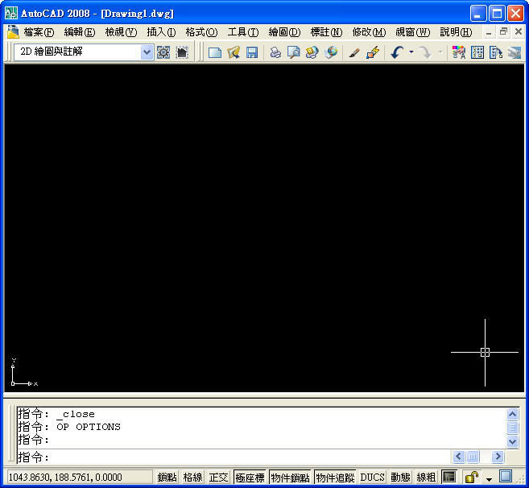
■介面中文翻譯：建議各版本能夠統一，不然對於既有的教學或是公司教育訓練，使用2009版本會對不起來，一樣會對新的使用者產生疑慮，會有使用2008以下版本習慣後就很難接受2009以上版本，而使用2009版本習慣後，對於使用2008已下板本會無法適應，進而造成使用新版本的意願降低。

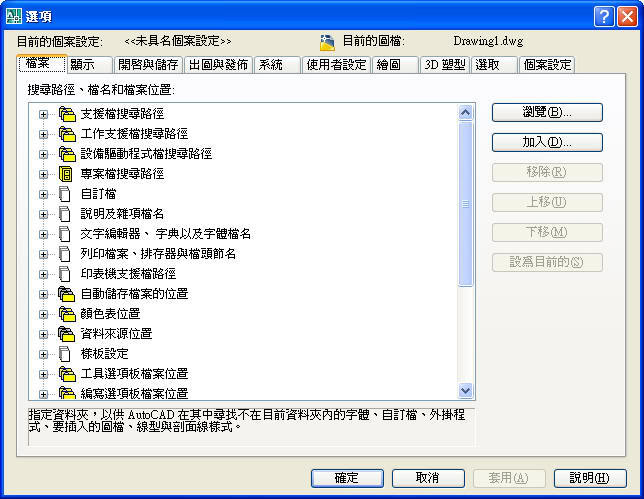


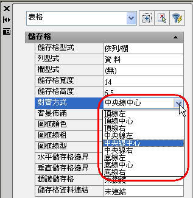
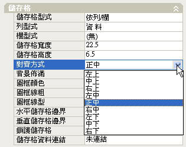

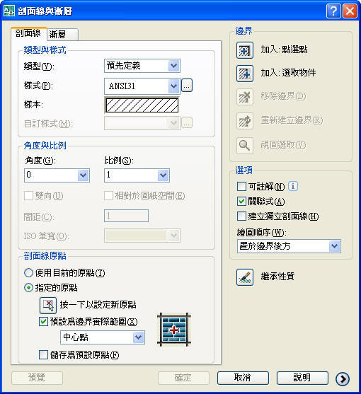
■功能介面問題：介面排版及顏色相關設定建議各版本都能一致。
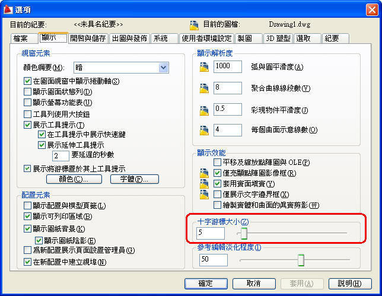
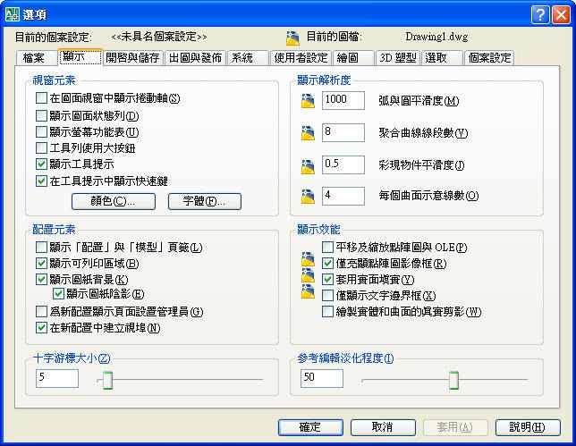

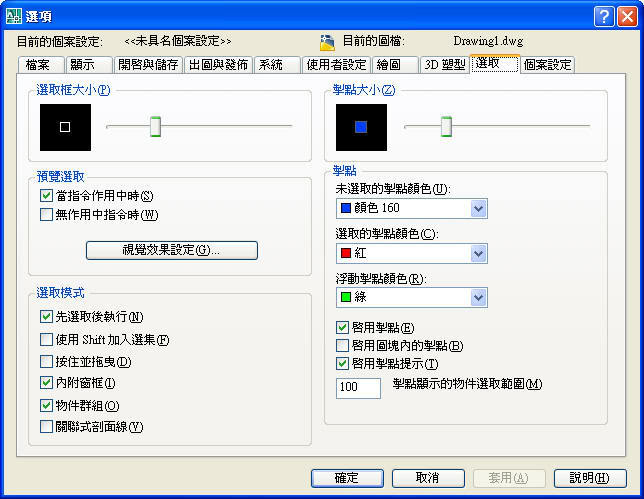
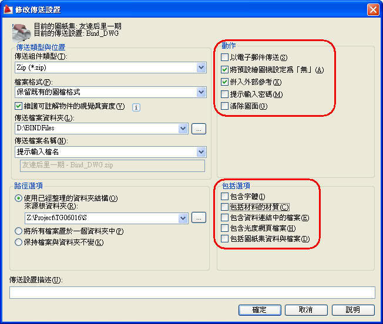
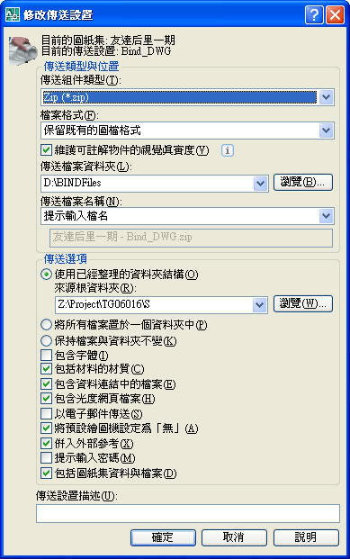


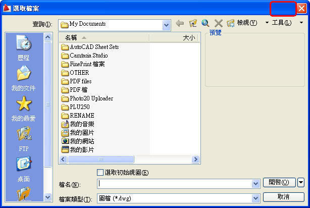
內定字型檔SXH及大字體檔，希望各版本能一樣，不然會造成新舊版本開圖時圖面的文字排版顯示問題，而介面的中文翻譯最好也能一致。
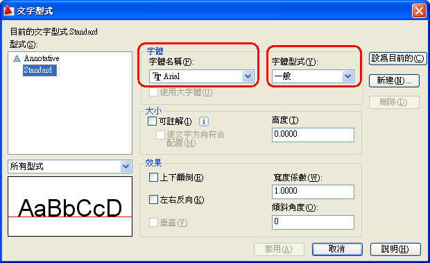